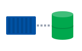
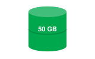
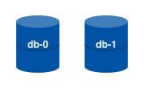
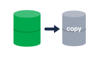
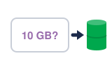
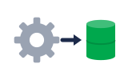
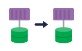

01The problem · បញ្ហាdisappear
A container's files disappear when it restarts.
ឯកសាររបស់កុងតឺន័របាត់ ពេលវា restart។
Volume និង StatefulSet · រក្សាទិន្នន័យ ទោះ pod ស្លាប់ក៏ដោយ
កុងតឺន័របាត់ទិន្នន័យពេល restart។ Volume ទុកទិន្នន័យនៅក្រៅ ហើយ StatefulSet ផ្តល់ឈ្មោះ និង disk ថេរ។

Volumeទិន្នន័យនៅក្រៅ
Real diskdisk ពិតប្រាកដ
Fixed namesdb-0, db-1
Backupsចម្លងទុកតាមលំដាប់៖ ទិន្នន័យបាត់ → volume និង disk → database → backup។
Space listen · ← → move · K show text
A container's files disappear when it restarts.
ឯកសាររបស់កុងតឺន័របាត់ ពេលវា restart។
A volume keeps data outside the container.
Volume រក្សាទុកទិន្នន័យ នៅក្រៅកុងតឺន័រ។
A PersistentVolume is a piece of real storage, like a cloud disk.
PersistentVolume គឺជាកន្លែងផ្ទុកពិតប្រាកដ ដូចជា disk នៅលើ cloud។

A PersistentVolumeClaim is a pod's request for storage.
PersistentVolumeClaim គឺជាសំណើរបស់ pod ដើម្បីសុំកន្លែងផ្ទុក។

A StorageClass creates disks automatically when we ask.
StorageClass បង្កើត disk ដោយស្វ័យប្រវត្តិ ពេលយើងសុំ។
Databases need stable names and their own disks.
Database ត្រូវការឈ្មោះថេរ និង disk ផ្ទាល់ខ្លួន។
A StatefulSet gives each pod a fixed name, like db-0 and db-1.
StatefulSet ផ្តល់ឈ្មោះថេរឲ្យ pod នីមួយៗ ដូចជា db-0 និង db-1។

Each pod keeps its own disk, even after it moves.
Pod នីមួយៗរក្សា disk ផ្ទាល់ខ្លួន ទោះបីវាផ្លាស់ទីក៏ដោយ។
We still take backups, because disks can fail.
យើងនៅតែធ្វើ backup ព្រោះ disk អាចខូចបាន។
Usually no. Use a StatefulSet, or a managed database from the cloud.
ជាធម្មតា មិនគួរទេ។ ប្រើ StatefulSet ឬ database ដែល cloud គ្រប់គ្រងឲ្យ។
ក្រុមជាច្រើនប្រើ database របស់ cloud ដើម្បីកុំឲ្យពិបាកថែទាំ។
No. The data lives on the volume, not in the pod.
ទេ។ ទិន្នន័យនៅលើ volume មិនមែននៅក្នុង pod ទេ។
តែបើលុប PVC ទិន្នន័យអាចបាត់ អាស្រ័យលើ reclaim policy។
There is no StorageClass, or no disk matches the request.
គ្មាន StorageClass ឬគ្មាន disk ណាត្រូវនឹងសំណើទេ។
Fifty gigabytes, and we can expand it.확인 필요 · checkcheck
ហាសិប gigabyte ហើយយើងអាចពង្រីកវាបាន។
We take a snapshot every night.확인 필요 · checkcheck
យើងថត snapshot រៀងរាល់យប់។
Tap a word's play button to hear it. Hide one side, then recall it before you tap to check.
Q. Should I use a deployment for my database?
Q. គួរប្រើ deployment សម្រាប់ database ទេ?
A. Usually no. Use a StatefulSet, or a managed database from the cloud.
A. ជាធម្មតា មិនគួរទេ។ ប្រើ StatefulSet ឬ database ដែល cloud គ្រប់គ្រងឲ្យ។
Q. If I delete the pod, is the data gone?
Q. បើខ្ញុំលុប pod តើទិន្នន័យបាត់ទេ?
A. No. The data lives on the volume, not in the pod.
A. ទេ។ ទិន្នន័យនៅលើ volume មិនមែននៅក្នុង pod ទេ។
Q. Why is my PVC stuck in Pending?
Q. ហេតុអ្វី PVC របស់ខ្ញុំជាប់ Pending?
A. There is no StorageClass, or no disk matches the request.
A. គ្មាន StorageClass ឬគ្មាន disk ណាត្រូវនឹងសំណើទេ។
Q. How big is the database disk?
Q. Disk របស់ database ធំប៉ុណ្ណា?
A. Fifty gigabytes, and we can expand it.
A. ហាសិប gigabyte ហើយយើងអាចពង្រីកវាបាន។
Q. How do we back up the data?
Q. យើង backup ទិន្នន័យយ៉ាងដូចម្តេច?
A. We take a snapshot every night.
A. យើងថត snapshot រៀងរាល់យប់។
Is this data safe to delete?
ទិន្នន័យនេះ លុបបានដោយសុវត្ថិភាពទេ?
Let me check the backup first.
ចាំខ្ញុំពិនិត្យ backup ជាមុនសិន។
Say it in your head first, then tap the box to check.